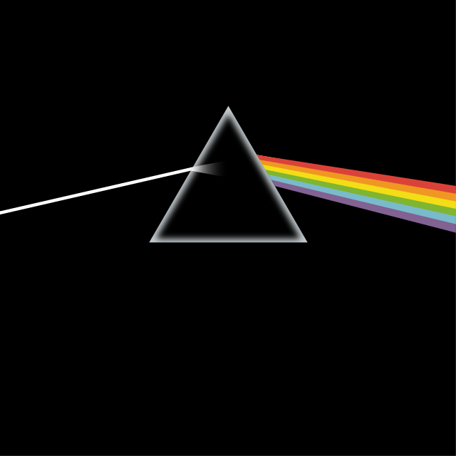

Hola mundo
Mis datos personales
- Nombre: Jair Antonio Martinez Valladares
- Carrera y grupo: Desarrollo de Software Multiplataforma, Grupo B
- Correo institucional: 20223tn068@utez.edu.mx
- Matrícula: 20223tn068
- Estudios previos: Preparatoria en Cbtis 82
- Pasatiempos: Jugar videojuegos, ver peliculas, jugar futbol, escuchar
musica
- Banda Favorita: Mis bandas favoritas son Pink Floyd
